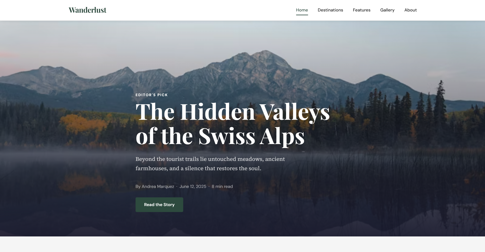

Project Overview
Wanderlust Magazine is a fictional, five page travel publication website I designed and built for CMI 3315. Inspired by print magazines like Condé Nast Traveler and Afar, the site focuses on long form storytelling and editorial photography. The goal was to apply all layout and CSS skills learned in the first half of the semester in a publication quality design.

The Challenge
The main challenge was creating a site that felt genuine, not like a student project, while still meeting every requirement in the rubric. I also wanted each of the five pages to feel distinct while sharing a clear identity. The second challenge was making the article page's sidebar stay visible as users scrolled through the body text, which required a sticky positioning I hadn't used before.
My Role
I was the sole designer and developer. I handled the complete process from concept to deployment, planning the layout with hand sketches, choosing the color palette and typography, writing all the HTML and CSS, and sourcing photography from Unsplash.
Design Process
Before writing any code, I sketched each page on paper to plan the layout and content order. I started with the homepage, deciding how the five pages would link to one another. I chose a forest green and off white palette because it reminded me of nature and editorial print quality, paired with Playfair Display for headings and Source Serif 4 for body text.
I built a CSS custom properties system at the top of my stylesheet so that every color, font, and spacing value was defined in one place, making changes fast and keeping the design cohesive.
Key Technical Features
- CSS Grid and Flexbox used across all five pages for adaptive layouts
- Sticky sidebar on the article page using
position: sticky - Responsive hamburger navigation at 768px and 480px breakpoints
- Asymmetric photo gallery built with CSS Grid named areas
- Keyframe animations on page load and hover transitions throughout
- Lazy loading on all below the fold images
- Semantic HTML5 structure with ARIA labels for accessibility
Solution
The final site includes five fully built pages: a homepage with a full screen hero and featured article grid, a long form article page with sticky sidebar, a destination category page with filter buttons, a photography gallery with hover captions, and an About page. All pages share one external CSS file and consistent navigation.
Results & Outcomes
The project met all technical requirements of the rubric and was submitted. The sticky sidebar, which I initially struggled with, ended up working cleanly using "position: sticky" combined with a "top" offset that accounts for the fixed navigation height. I validated all HTML and CSS and used Lighthouse tests in Chrome to check performance and accessibility.
Reflection
This project taught me that design systems setting up your variables and typography scale before you write a single layout rule save an enormous amount of time. I also learned that the sticky sidebar layout, which felt intimidating at first, actually requires very few CSS rules once you understand how the stacking works. If I were to do this project again, I'd spend more time on mobile first layout from the start, rather than adapting a desktop first design downward.